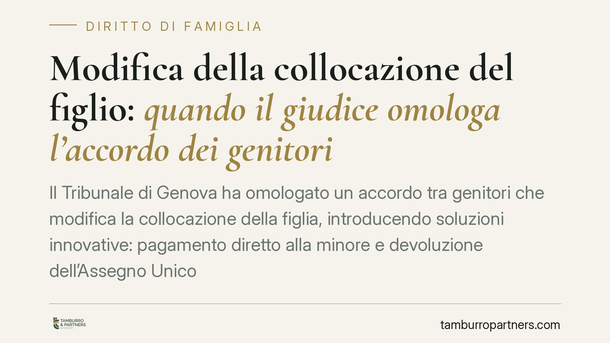

Modifica della collocazione del figlio: quando il giudice omologa l'accordo dei genitori
Il Tribunale di Genova ha omologato un accordo tra genitori che modifica la collocazione della figlia, introducendo soluzioni innovative: pagamento diretto alla minore e devoluzione dell'Assegno Unico alla figlia maggiorenne. La validità dell'intesa resta però condizionata alla prosecuzione del percorso di sostegno alla genitorialità. Una decisione che chiarisce fino a dove arriva l'autonomia dei genitori.

Il caso in sintesi
Due genitori raggiungono un'intesa per cambiare la collocazione della figlia, cioè il luogo dove il minore vive prevalentemente. L'accordo non si limita a questo: prevede il versamento diretto del contributo economico alla ragazza e la devoluzione dell'Assegno Unico alla figlia divenuta maggiorenne.
Il Tribunale di Genova, Sezione IV, ha omologato l'intesa. Ma ha posto una condizione precisa: l'accordo mantiene efficacia solo se i genitori proseguono il percorso di sostegno alla genitorialità già avviato con i servizi sociali e il consultorio familiare.
Inquadramento normativo
Il punto di riferimento è l'art. 337-quinquies del Codice civile, che consente a ciascun genitore di chiedere in ogni momento la revisione delle disposizioni relative all'affidamento, alla collocazione e ai contributi economici, quando sopravvengano giustificati motivi.
Sul piano processuale rileva l'art. 473-bis.28 del Codice di procedura civile, introdotto dalla riforma Cartabia, che disciplina la modifica dei provvedimenti nei procedimenti di famiglia. Quando i genitori concordano sulle nuove condizioni, il giudice non si limita a prenderne atto: verifica che l'accordo risponda all'interesse del minore.
È questo il perno della decisione. L'autonomia dei genitori è ampia, ma non illimitata. Il controllo giudiziale non è una formalità: il giudice può omologare, respingere o — come in questo caso — omologare subordinando l'efficacia dell'intesa a specifiche condizioni.
Cosa c'è di innovativo
Due elementi meritano attenzione.
Il primo è il pagamento diretto alla minore. Di norma il contributo per il mantenimento viene versato al genitore collocatario, che lo gestisce nell'interesse del figlio. Qui il Tribunale ha ammesso una modalità diversa, valorizzando l'autonomia della ragazza e la sua capacità di gestione. Non è una soluzione automatica né generalizzabile: dipende dall'età, dalla maturità e dal contesto familiare concreto.
Il secondo è la devoluzione dell'Assegno Unico alla figlia maggiorenne. L'Assegno Unico e Universale spetta di regola al genitore, ma può essere corrisposto direttamente al figlio maggiorenne che ne faccia richiesta. La decisione recepisce questa possibilità in sede di accordo omologato.
Sullo sfondo c'è la scelta più significativa: condizionare la validità dell'intesa al proseguimento del percorso di sostegno alla genitorialità. Il Tribunale non tratta l'accordo come un punto d'arrivo, ma come un tassello di un percorso che deve continuare. Se il percorso si interrompe, l'equilibrio raggiunto può essere rivisto.
Implicazioni pratiche
Per i genitori separati la lettura è chiara: un accordo condiviso ha buone possibilità di essere omologato, ma deve reggere il vaglio dell'interesse del figlio. Non basta il consenso reciproco; contano le concrete condizioni di vita del minore.
Le soluzioni economiche possono essere flessibili. Il pagamento diretto al figlio e la gestione dell'Assegno Unico non sono più opzioni marginali. Vanno però motivate e calibrate sulla situazione specifica.
Attenzione, infine, alle clausole condizionate. Un'omologa subordinata a un percorso di sostegno significa che l'accordo non è definitivo in senso assoluto: il mancato rispetto delle condizioni può riaprire la questione.
Cosa fare in concreto
- Formalizzate ogni modifica sostanziale della collocazione o dei contributi economici davanti al giudice: gli accordi informali non tutelano nessuno in caso di contrasto.
- Documentate le ragioni del cambiamento, ancorandole sempre all'interesse concreto del figlio (esigenze scolastiche, relazionali, di salute).
- Valutate con cautela il pagamento diretto al figlio: verificate età, maturità e sostenibilità della soluzione prima di proporla.
- Rispettate le condizioni poste dal giudice, come la prosecuzione dei percorsi di sostegno: la loro interruzione può compromettere l'efficacia dell'accordo.
- Prima di firmare, fatevi assistere: una clausola imprecisa può generare contenzioso futuro.
Osservazione conclusiva
La decisione genovese conferma una tendenza: il giudice della famiglia non è un notaio che registra intese, ma un garante dell'interesse del minore. All'autonomia dei genitori si affianca un controllo che può spingersi fino a condizionare l'efficacia stessa dell'accordo. È un approccio che premia le soluzioni concrete e responsabili, purché sostenibili nel tempo.
---
*Contributo informativo a cura di Tamburro & Partners - Avv. Giuseppe Tamburro. Non costituisce parere legale.*
Ogni famiglia ha il suo equilibrio.
Separazione, divorzio, affidamento, assegno: se vuoi un confronto riservato su una specifica situazione, scrivi allo studio. Ti rispondiamo entro un giorno lavorativo.